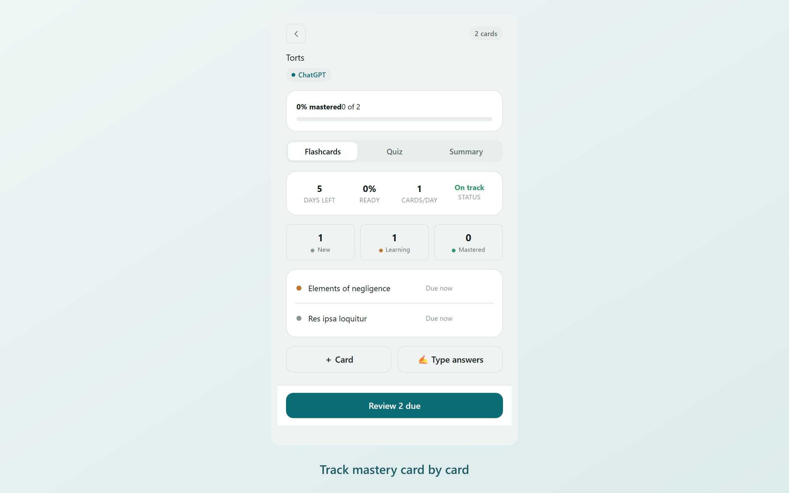
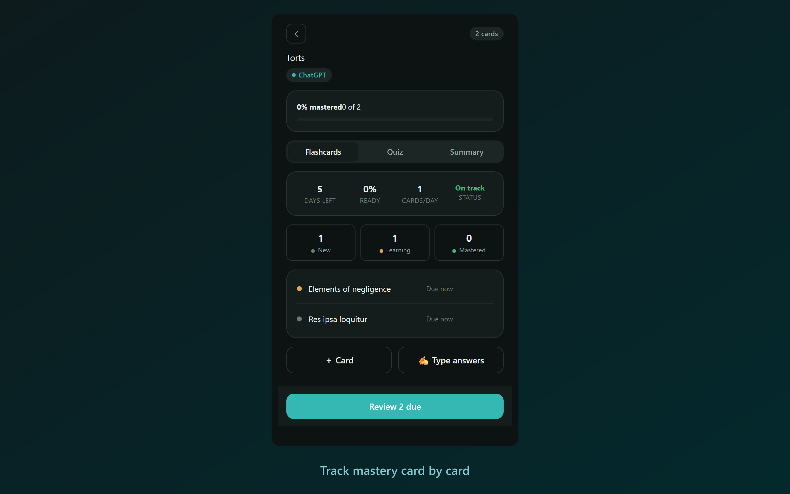
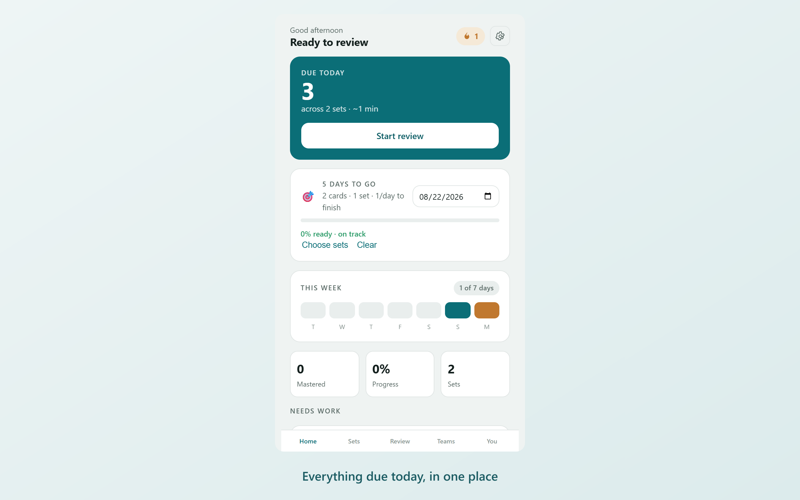
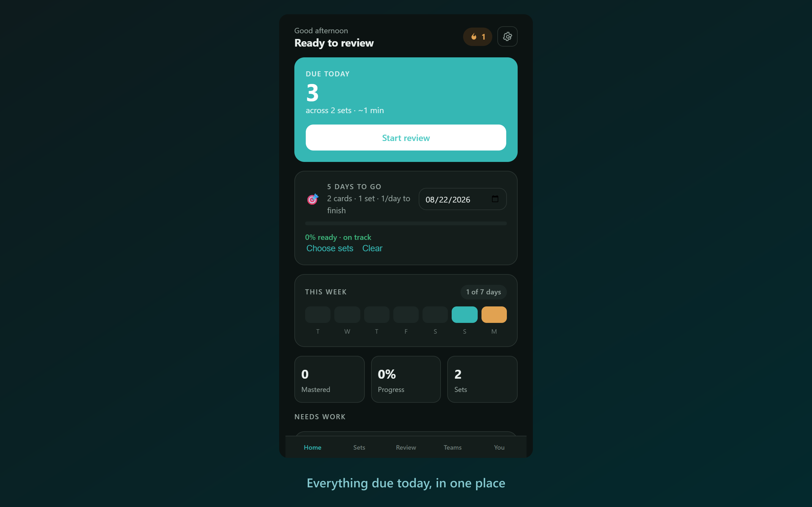
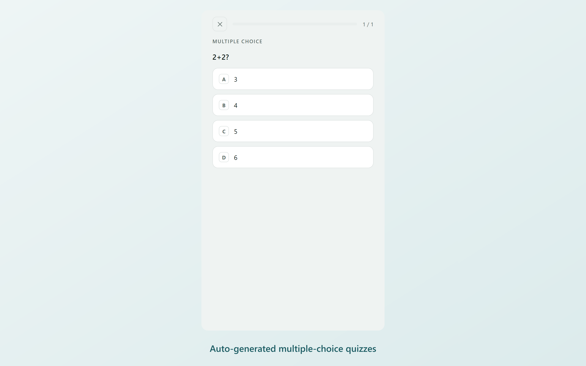
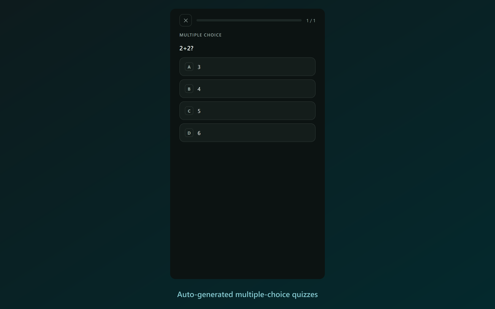
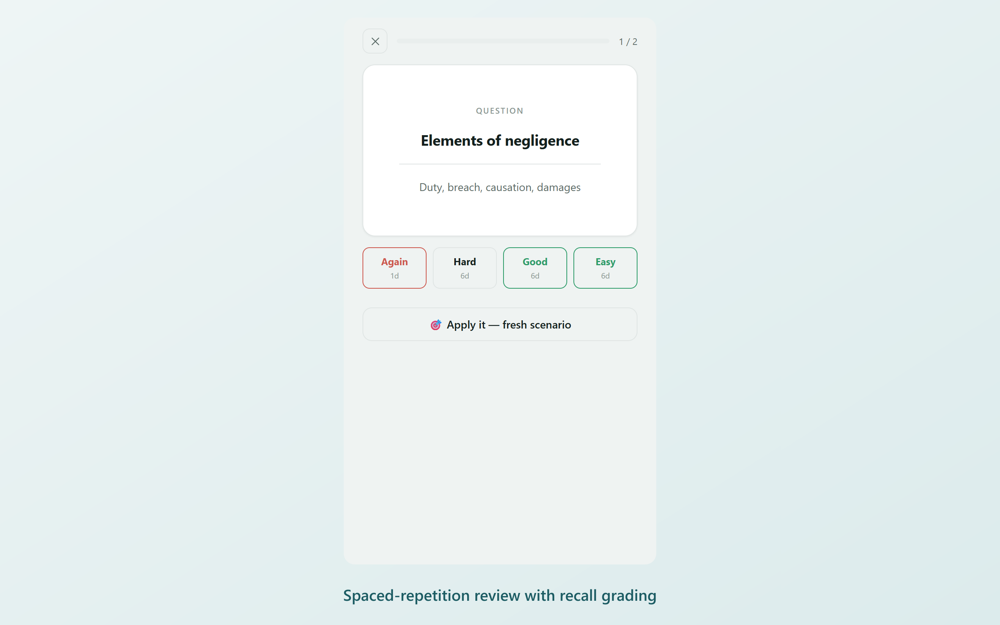
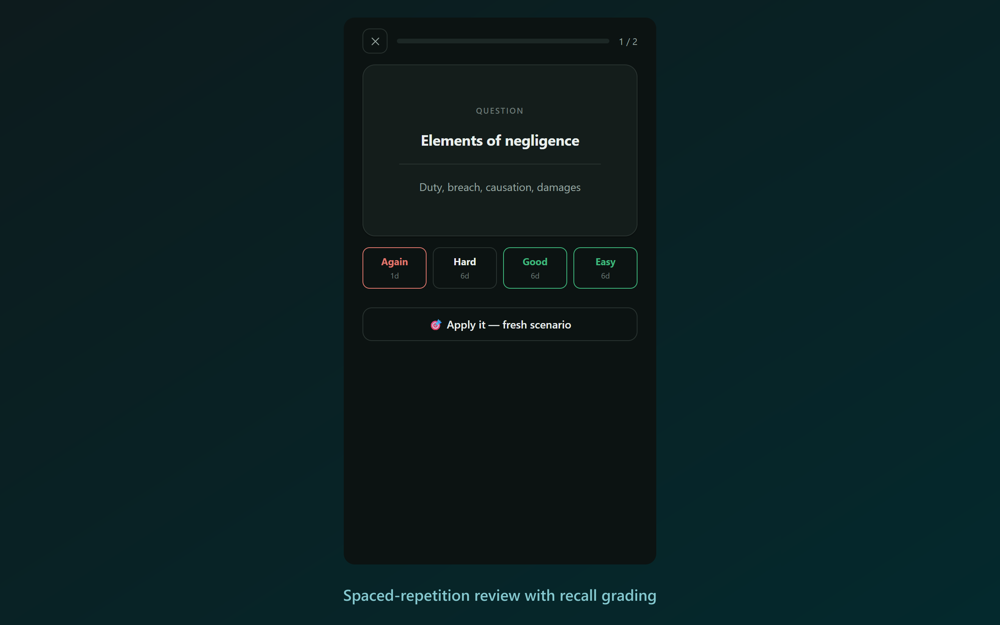

01
Capture
Right-click any page → Save to Mafsar. Works on ChatGPT, Claude and Gemini conversations, on any article, or on just the text you select. Existing Quizlet sets can be imported.


Chrome & Firefox extension
We learn enormous amounts from conversations with ChatGPT, Claude and Gemini — and then forget essentially all of it, because a chat log is not a study tool.
Capture your AI chat learning sessions and turn them into flashcards, quizzes, and spaced-repetition reviews so you don't forget.


Why it works
Read something once and most of it is gone within days. Review it at widening intervals and each pass decays more slowly than the last — until it simply stays.
Mafsar schedules those intervals for you with SM-2, so material comes back the day before you'd have lost it.
How it works
Three steps, and only the first one needs you.
Right-click any page → Save to Mafsar. Works on ChatGPT, Claude and Gemini conversations, on any article, or on just the text you select. Existing Quizlet sets can be imported.


Flashcards and a multiple-choice quiz are automatically written from your captured content, usually within about ten seconds.


Cards resurface on a spaced-repetition schedule (SM-2) — right before you'd otherwise forget them.


Beyond flashcards
Mafsar goes beyond basic flashcards to make sure you actually internalise what you capture.
Type answers in your own words and have them graded against your own material. Or try “Apply it” — a fresh scenario for a concept, so you practise using it in context rather than simply recalling a definition.
Powered by SM-2, but tuned for reality. If you miss a card and answer “Again”, it comes back later in the same session instead of hiding until tomorrow. Set an exam date, and Mafsar works backwards into a daily target to keep you on track.
Mafsar shuffles both the question order and the answer options every single sitting, so you learn the actual material rather than memorising the position of the right answer.
Master technical concepts with small, focused coding exercises generated from a concept. Your answer is graded against a per-requirement checklist rather than a single opaque score, helping you see exactly where you went wrong.
Flashcards and multiple-choice quizzes are built automatically from any captured content.
Pick your quiz length — jump into a quick run or tackle the full set at once.
Get instant summaries and key points extracted from your long AI conversations.
A dedicated view that automatically surfaces the specific concepts you keep missing.
Stay consistent with daily study reminders and a streak counter.
Works fully offline. Sign in to sync your progress seamlessly across devices.
Privacy
When an extension reads web pages, you should know exactly what it's doing. Mafsar is designed to protect your data by default.